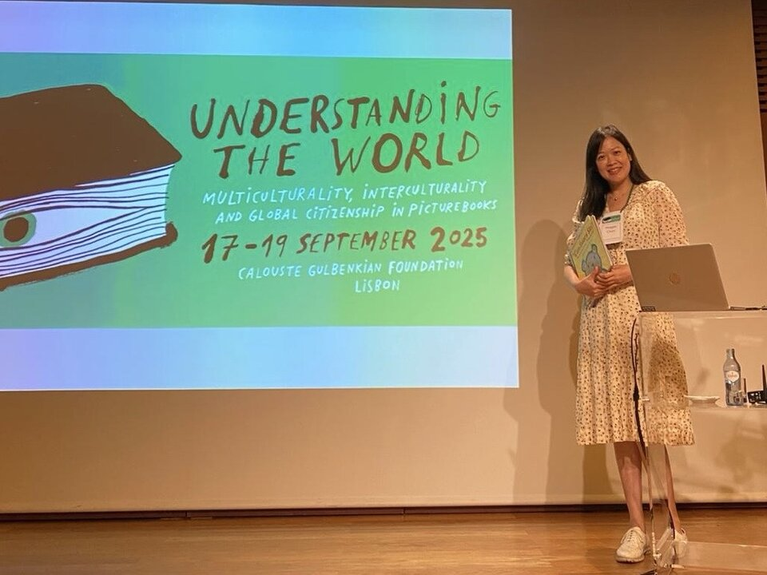

I work with educators, librarians, publishers, cultural organisations and researchers on children’s literature, literacy and education. I also advise prospective students who are considering studying in the UK. We’ll discuss what you want to achieve and what support would help.

European Network of Picturebook Research Conference, Lisbon, 2025
Children’s books and public programmes
Reading lists and book selection
I develop annotated reading lists for schools, libraries, publishers and community programmes. Selections can explore themes such as disability and neurodiversity, cultural identity, or childhood and belonging, with books chosen for your audience and purpose.
Reading sessions, workshops and exhibitions
I design and lead shared reading sessions and workshops for children, families and professionals. Activities can include close looking, visual storytelling and creative responses alongside discussion. I also work with cultural and education partners to curate picturebook exhibitions, from selecting books and shaping the display to planning activities for visitors.
Picturebook and resource development
I provide feedback on manuscripts, sample spreads and learning resources, with attention to how words and images work together and how readers may encounter the themes.
Research, writing and training
Research and article consultancy
I help researchers refine a research question, develop a project or article, and work through feedback. Areas can include children’s literature, literacy and education, with themes such as disability and neurodiversity among the possible starting points.
Research training and professional development
I offer research advice and training in education and the social sciences for students, researchers and staff teams. Sessions can cover research design, qualitative methods, multimodal analysis, or how to connect evidence to an argument.
Academic editing and feedback
I provide editorial feedback and language editing for articles, abstracts and proposals. The scope can include argument and structure, clarity and consistency, or a focused review of a revised draft.
Studying in the UK
Guidance for prospective students
I offer individual guidance for students considering university study in the UK. We can compare courses, discuss what to expect from UK university study and, where helpful, work through application timelines or feedback on your own draft materials.
Get in touch
Tell me a little about your project, who it is for and what you’d like help with. If you have a date in mind, please include it. We can then discuss the scope, format and fee.